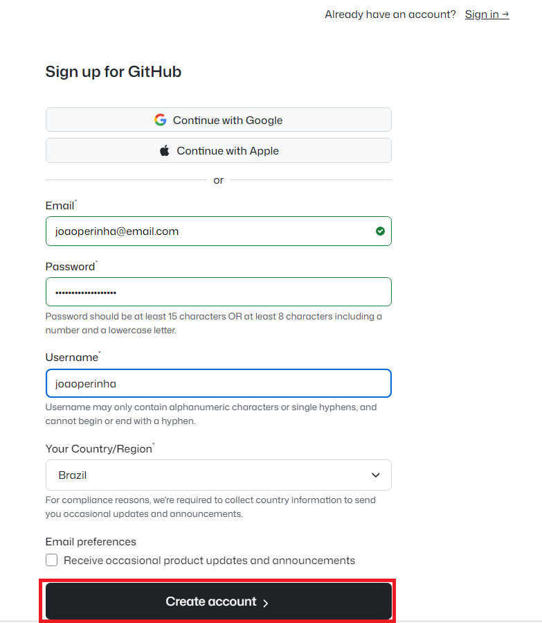
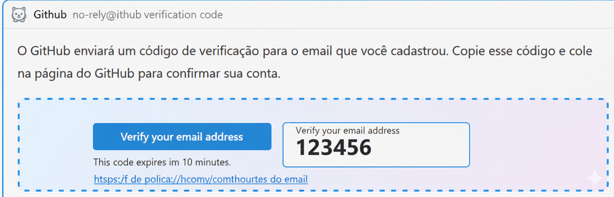
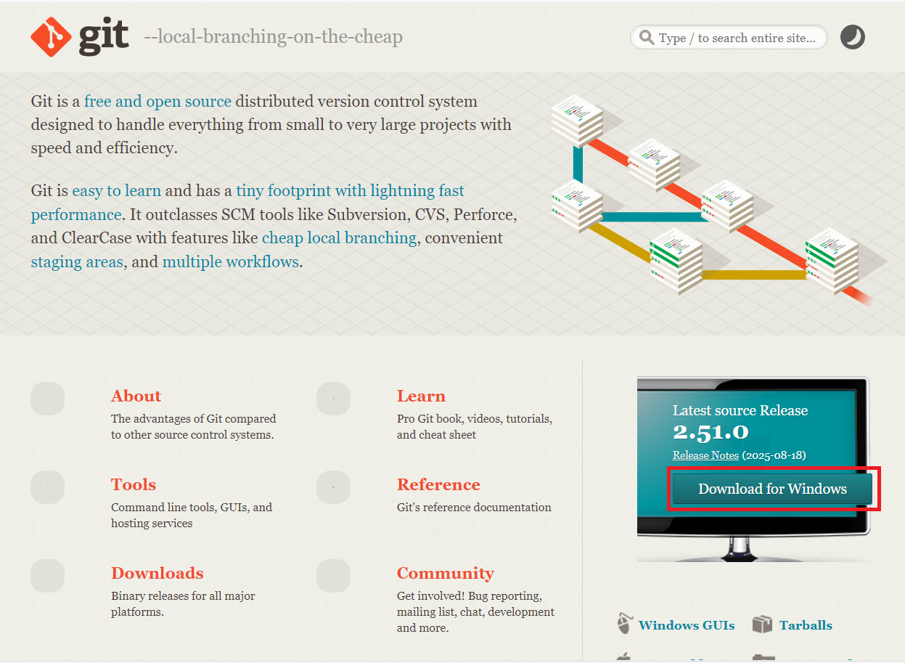
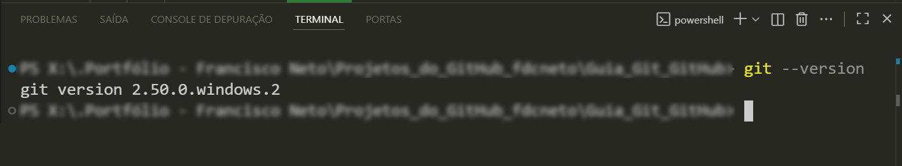
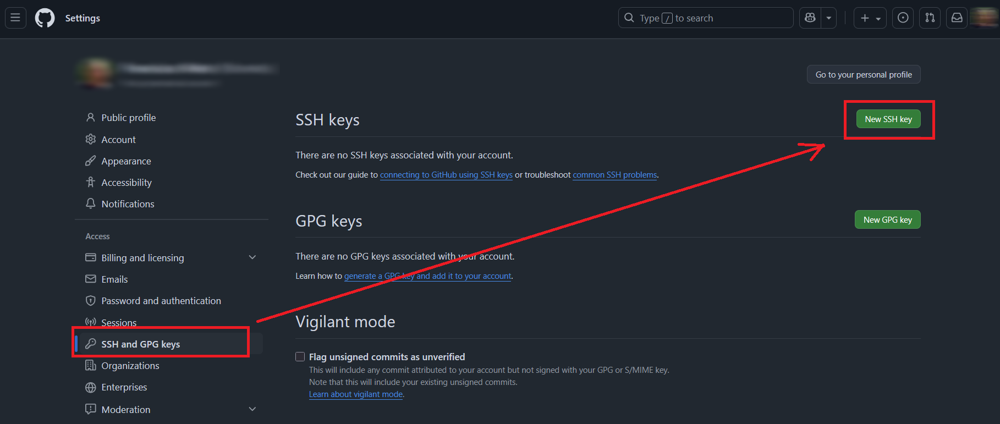
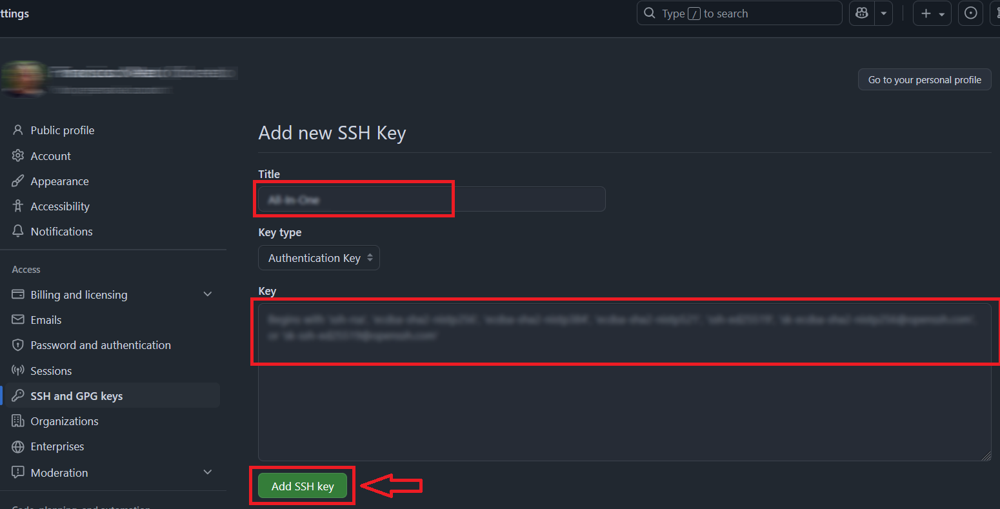
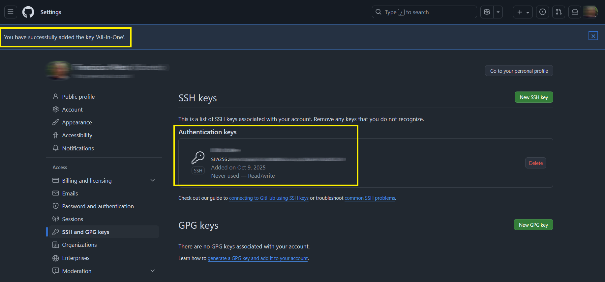
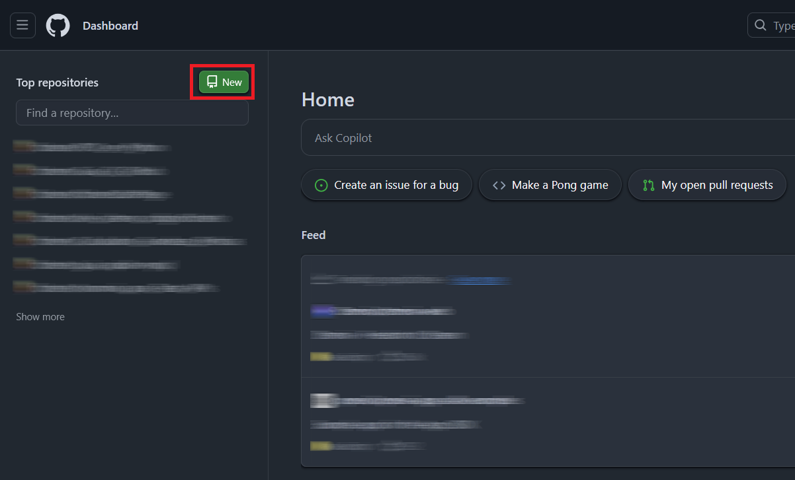
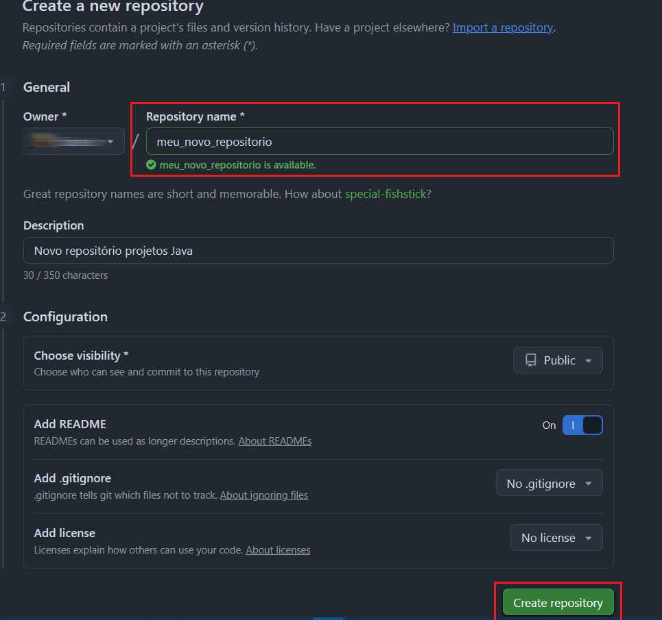

Bem-vindo ao Mundo do Git e GitHub!
Este manual foi criado especialmente para você que está começando sua jornada na programação e nunca teve contato com Git ou GitHub. Aqui você vai aprender desde o básico até os comandos mais importantes, tudo de forma clara e prática. Vamos juntos nessa!
Início rápido
Clique aqui se estiver com pressa 🤣📋 Índice do Conteúdo
- 1. O que é Git e GitHub?
- 2. Criando sua conta no GitHub
- 3. Instalando o Git
- 4. Instalando o Git Bash
- 5. Instalando o GitHub Desktop
- 6. Configuração Inicial do Git
- 7. Criando seu Primeiro Repositório
- 8. Clonando um Repositório
- 9. Comandos Básicos do Git
- 10. Integrando com VS Code
- 11. Fluxo de Trabalho Completo
- 12. Outros Comandos Importantes
- 13. Git em Projetos Reais: Recuperação, Checkpoints e Operações Avançadas
1. O que é Git e GitHub?
Entendendo o Git
Git é um sistema de controle de versão distribuído (DVCS - Distributed Version Control System). Ele foi criado por Linus Torvalds, o mesmo criador do Linux, e é um software de código aberto.
Mas o que isso significa na prática?
Imagine que você está escrevendo um trabalho importante no Word. Você salva o arquivo como "trabalho_v1.doc", depois faz mudanças e salva como "trabalho_v2.doc", depois "trabalho_final.doc", "trabalho_final_revisado.doc", "trabalho_final_final.doc"... Você já passou por isso, não é?
O Git resolve exatamente esse problema! Ele mantém um histórico completo de todas as mudanças que você fez no seu código, permitindo que você:
- Volte para versões anteriores quando algo der errado
- Veja exatamente o que foi modificado e quando
- Trabalhe em equipe sem sobrescrever o trabalho dos outros
- Crie versões paralelas do seu projeto (branches) para testar novas funcionalidades
Entendendo o GitHub
GitHub é uma plataforma web que hospeda repositórios Git na nuvem. É importante entender:
Git ≠ GitHub
- Git é o sistema/ferramenta instalada no seu computador
- GitHub é o site/serviço online que usa Git
- Você pode usar Git sem GitHub (criando repositórios locais)
- Mas o GitHub precisa do Git para funcionar
Outras plataformas similares ao GitHub: GitLab, BitBucket, SourceForge. Neste manual, focaremos no GitHub por ser a plataforma mais popular e amplamente utilizada.
2. Criando sua Conta no GitHub
1Acesse o site oficial:
Abra seu navegador e digite: https://github.com
Ou: https://github.com/?locale=pt-br
2Clique em "Sign up" (Cadastrar-se)
O botão está localizado no canto superior direito da página.
3Preencha os dados solicitados:
- Email: Use um email válido que você acessa regularmente
- Password (Senha): Crie uma senha forte (mínimo 8 caracteres, com letras e números)
- Username (Nome de usuário): Escolha um nome único. Este será seu identificador no GitHub!
- Use letras minúsculas e hífens (não use espaços ou caracteres especiais)
- Escolha algo profissional, pois você pode usar no futuro para mostrar seus projetos
- Exemplo: joao-silva, maria-santos, dev-lucas

4Verifique seu email
O GitHub enviará um código de verificação para o email que você cadastrou. Copie esse código e cole na página do GitHub para confirmar sua conta.

5Personalize sua experiência (opcional)
O GitHub pode fazer algumas perguntas sobre como você pretende usar a plataforma. Você pode responder ou pular essa etapa clicando em "Skip".
Agora você tem acesso ao GitHub e pode começar a explorar a plataforma. Mas antes de criar seu primeiro repositório, vamos instalar as ferramentas necessárias no seu computador.
3. Instalando o Git no seu Computador
O Git é o software principal que permite o controle de versão. Ele funciona através de linha de comando (terminal) e é essencial para todos os próximos passos.
Para Windows:
1Acesse o site oficial do Git:
Digite no navegador: https://git-scm.com

2Clique no botão de download
O site detectará automaticamente seu sistema operacional e mostrará o botão adequado. Clique em "Download for Windows" (ou o sistema que você estiver usando).
3Execute o instalador
Após o download, clique duas vezes no arquivo baixado (geralmente chamado "Git-x.xx.x-64-bit.exe").
O instalador fará várias perguntas. Para iniciantes, recomendamos aceitar as opções padrão clicando em "Next" em todas as telas. As configurações padrão funcionam perfeitamente para começar!
4Configurações importantes (durante a instalação):
- Editor padrão: Mantenha "Vim" ou escolha "Nano" ou "Notepad++" se preferir
- PATH environment: Selecione "Git from the command line and also from 3rd-party software" (opção recomendada)
- Line ending conversions: Mantenha "Checkout Windows-style, commit Unix-style line endings"
- Para todas as outras opções, mantenha os valores padrão
Mostrando as opções de configuração
5Finalize a instalação
Clique em "Install" e aguarde a conclusão. Depois clique em "Finish".
6Verifique se a instalação funcionou:
Abra o Prompt de Comando (CMD) ou PowerShell e digite:
Se aparecer algo como "git version 2.xx.x", a instalação foi bem-sucedida!

Exemplo: "git version 2.43.0"Para Mac:
No Mac, você tem duas opções:
Opção 1 - Homebrew (recomendado):
Opção 2 - Download direto:
Acesse https://git-scm.com e baixe o instalador para Mac.
Para Linux:
No Linux, use o gerenciador de pacotes da sua distribuição:
Ubuntu/Debian:
sudo apt-get install git
Fedora:
4. Instalando e Usando o Git Bash
Git Bash é um terminal especial para Windows que emula um ambiente Linux. Ele já vem incluído na instalação do Git para Windows! Se você seguiu o passo anterior e instalou o Git, o Git Bash já está instalado no seu computador.
1Abrindo o Git Bash:
- Clique no menu Iniciar do Windows
- Digite "Git Bash" na barra de pesquisa
- Clique no aplicativo "Git Bash"
Mostrando "Git Bash" na busca
2Conhecendo o Git Bash:
Uma janela preta (ou com fundo colorido) abrirá. Ela se parece com isso:
$
O símbolo $ indica que o terminal está pronto para receber comandos.
3Comandos básicos do terminal:
Antes de usar o Git, é importante conhecer alguns comandos básicos de navegação no terminal:
| Comando | O que faz | Exemplo |
|---|---|---|
pwd |
Mostra em qual pasta você está | pwd |
ls |
Lista arquivos e pastas | ls |
cd |
Muda de pasta | cd Documentos |
cd .. |
Volta uma pasta | cd .. |
mkdir |
Cria uma nova pasta | mkdir meus-projetos |
clear |
Limpa a tela do terminal | clear |
Você também pode abrir o Git Bash em qualquer pasta do Windows! Basta clicar com o botão direito dentro da pasta e selecionar "Git Bash Here". Isso é muito útil para trabalhar em projetos específicos.
Mostrando a opção "Git Bash Here"
5. Instalando o GitHub Desktop
GitHub Desktop é uma interface gráfica (com botões e janelas) para usar o Git. Enquanto o Git Bash usa comandos de texto, o GitHub Desktop permite fazer as mesmas operações clicando em botões. É ótimo para visualizar mudanças e para quem está começando!
1Acesse o site oficial:
Digite no navegador: https://desktop.github.com
Mostrando o botão "Download for Windows"
2Baixe e instale:
Clique em "Download for Windows" (ou Mac, se for o caso). O instalador será baixado automaticamente.
Execute o arquivo baixado (GitHubDesktopSetup.exe) e aguarde a instalação automática.
3Faça login na sua conta GitHub:
Quando o GitHub Desktop abrir pela primeira vez, ele pedirá para você fazer login:
- Clique em "Sign in to GitHub.com"
- Uma janela do navegador abrirá
- Faça login com o email e senha que você criou anteriormente
- Autorize o GitHub Desktop a acessar sua conta
Mostrando botão "Sign in to GitHub.com"
4Configure seu nome e email:
O GitHub Desktop pedirá para confirmar seu nome e email. Esses dados aparecerão nos seus commits (histórico de mudanças). Verifique se estão corretos e clique em "Finish".
Agora você tem tanto o Git Bash (linha de comando) quanto o GitHub Desktop (interface gráfica) instalados. Você pode usar qualquer um dos dois - ou ambos! Muitos programadores usam os dois dependendo da situação.
6. Configuração Inicial do Git
Antes de começar a usar o Git, precisamos dizer a ele quem você é. Essas informações aparecerão em todos os commits (registros de mudanças) que você fizer, então é importante configurar corretamente.
6.1) Configurar seu nome
Abra o Git Bash e digite:
Exemplo:
6.2) Configurar seu email
Digite o seguinte comando (usando o MESMO email da sua conta GitHub):
Exemplo:
6.3) Verificar suas configurações
Para ter certeza de que tudo foi configurado corretamente, digite:
Você verá uma lista com todas as suas configurações. Procure pelas linhas:
user.email=seuemail@exemplo.com
6.4) Configurações opcionais (mas recomendadas)
Configurar o editor padrão:
Se você usa o VS Code (que veremos mais adiante), pode configurá-lo como editor padrão:
Configurar cores no terminal:
Para facilitar a visualização, ative as cores nos comandos Git:
6.5) (RECOMENDADO) Gerar uma Chave SSH e Adicioná-la ao GitHub
SSH (Secure Shell) é um protocolo de comunicação segura que permite conectar seu computador ao GitHub sem precisar digitar usuário e senha toda vez. É como criar uma "identidade digital" única para seu computador.
Vantagens de usar SSH:
- Segurança: Usa criptografia avançada para proteger suas informações
- Praticidade: Depois de configurar, você não precisa mais digitar senha em cada operação
- Autenticação automática: O GitHub reconhece seu computador automaticamente
- Padrão da indústria: É o método mais usado por desenvolvedores profissionais
Você também pode usar HTTPS (com usuário e senha ou token), mas o SSH é mais prático e seguro para uso diário. Se você pular essa etapa agora, poderá voltar e configurar depois.
Passo a passo detalhado para configurar SSH:
6.5.1) Verificar se você já tem chaves SSH
Antes de criar uma nova chave, vamos verificar se você já tem alguma. No Git Bash, digite:
Se você ver arquivos como id_rsa.pub, id_ecdsa.pub ou
id_ed25519.pub, você já tem uma chave SSH e pode pular para o passo 6.5.4. Se
aparecer "No such file or directory", continue para o próximo passo.
6.5.2) Gerar uma nova chave SSH
Vamos criar uma chave SSH usando o algoritmo Ed25519 (mais moderno e seguro). No Git Bash, digite:
Substitua "seuemail@exemplo.com" pelo email da sua conta GitHub!
ssh-keygen: comando para gerar chaves SSH-t ed25519: tipo de criptografia (Ed25519 é o mais recomendado atualmente)-C "seu email": adiciona seu email como etiqueta/comentário na chave
6.5.3) Responder às perguntas durante a geração
O terminal fará algumas perguntas. Veja como responder:
➡️ Apenas pressione ENTER (aceita o local padrão)
➡️ Digite uma senha forte (opcional, mas recomendado para maior segurança) ou pressione ENTER para não usar senha.
- Com passphrase: Mais seguro. Se alguém copiar sua chave, não conseguirá usá-la sem a senha
- Sem passphrase: Mais prático. Você não precisará digitar senha, mas se alguém acessar sua chave, poderá usá-la
- Recomendação: Use uma passphrase se você trabalha em computador compartilhado ou público
➡️ Digite a mesma senha novamente (ou pressione ENTER se não usou senha)
Você verá uma mensagem parecida com esta:
Your public key has been saved in /c/Users/você/.ssh/id_ed25519.pub
The key fingerprint is:
SHA256:xxxxxxxxxxxxxxxxxxxxxxxxxxxxxxxxxxxxxxx seuemail@exemplo.com
Isso significa que duas chaves foram criadas:
- Chave privada (
id_ed25519): NUNCA compartilhe! Fica só no seu computador - Chave pública (
id_ed25519.pub): Esta você vai adicionar no GitHub
6.5.4) Iniciar o SSH Agent
O SSH Agent é um programa que gerencia suas chaves SSH. Vamos iniciá-lo:
Você verá algo como: Agent pid 12345
6.5.5) Adicionar sua chave SSH ao SSH Agent
Agora vamos registrar sua chave privada no SSH Agent:
Se você usou uma passphrase, ela será solicitada agora. Digite-a e pressione ENTER.
6.5.6) Copiar sua chave pública
Agora precisamos copiar o conteúdo da chave pública para adicionar no GitHub. Digite:
Para Mac:
Para Linux:
(Depois selecione e copie o texto que aparecer)
O arquivo abrirá no Bloco de Notas. Copie TODO o conteúdo (Ctrl+A, depois Ctrl+C)
6.5.7) Adicionar a chave SSH no GitHub
Agora vamos ao site do GitHub para adicionar sua chave:
- Acesse
https://github.come faça login - Clique na sua foto de perfil (canto superior direito)
- Clique em Settings (Configurações)
- No menu lateral esquerdo, clique em SSH and GPG keys
- Clique no botão verde New SSH key (ou Add SSH key)

Preencha os campos:
- Title (Título): Dê um nome que identifique seu computador, exemplo: "Notebook Pessoal", "PC Casa", "Desktop Trabalho"
- Key type: Deixe em "Authentication Key"
- Key (Chave): Cole a chave que você copiou (Ctrl+V). Ela começará com "ssh-ed25519" ou "ssh-rsa"

Clique em Add SSH key
O GitHub pode pedir sua senha para confirmar. Digite sua senha do GitHub e confirme.
Você verá sua chave listada na página com o título que você escolheu e a data de adição.

6.5.8) Testar a conexão SSH
Vamos verificar se tudo está funcionando corretamente. No Git Bash, digite:
Na primeira vez, você verá uma mensagem perguntando se confia no host:
Are you sure you want to continue connecting (yes/no/[fingerprint])?
➡️ Digite "yes" e pressione ENTER
Se tudo deu certo, você verá uma mensagem como:
Agora você pode usar o GitHub sem precisar digitar senha toda vez. Quando for clonar repositórios, use sempre a URL SSH (que começa com git@github.com) em vez da URL HTTPS.
Entendendo a diferença na prática:
Quando você vai clonar um repositório, o GitHub oferece duas opções de URL. Veja a diferença:
URL HTTPS (antiga forma):
- ❌ Pede senha toda vez que você faz
git pushougit pull - ❌ Desde agosto de 2021, o GitHub não aceita mais senha de conta - você precisa criar um token de acesso pessoal
- ❌ Tokens são longos e difíceis de decorar
- ⚠️ Exemplo de senha que NÃO funciona mais: sua senha normal do GitHub
URL SSH (nova forma - recomendada):
- ✅ Nunca pede senha (depois da configuração inicial)
- ✅ Autenticação automática via chave SSH
- ✅ Mais seguro e prático
- ✅ É o método usado por desenvolvedores profissionais
Como escolher a URL correta ao clonar:
1. Na página do seu repositório no GitHub:
- Clique no botão verde "Code"
- Você verá duas abas: HTTPS e SSH
Destacar a diferença entre as URLs
2. Para usar SSH:
- Clique na aba "SSH" (não HTTPS!)
- A URL mostrada começará com
git@github.com: - Copie essa URL
- Use no comando:
git clone git@github.com:seu-usuario/meu-projeto.git
3. Para verificar qual você está usando em um repositório já clonado:
Se você ver algo como:
origin https://github.com/usuario/projeto.git (push)
Você está usando HTTPS (não ideal).
Se você ver:
origin git@github.com:usuario/projeto.git (push)
Você está usando SSH! ✅ (perfeito!)
Como mudar de HTTPS para SSH em um repositório já clonado:
Se você já clonou um repositório usando HTTPS e quer mudar para SSH, não precisa clonar tudo de novo! Basta atualizar a URL:
Agora você pode fazer git push e git pull sem
digitar senha!
Exemplo prático completo:
Cenário: Você quer clonar o repositório "meu-site-portfolio" da sua conta GitHub.
❌ Forma antiga (HTTPS):
# Ao fazer git push, pedirá: username e token (toda vez!)
✅ Forma correta (SSH):
# Ao fazer git push, não pede nada! Funciona automaticamente!
Testando se sua configuração SSH está funcionando:
Antes de clonar qualquer repositório, teste sua conexão SSH:
Resposta esperada se estiver tudo certo:
Se você receber essa mensagem, significa que:
- ✅ Sua chave SSH está configurada corretamente
- ✅ O GitHub reconheceu sua chave
- ✅ Você pode clonar e fazer push sem senha
- ✅ Está tudo pronto para usar!
- Volte para a seção 6.5 e verifique se adicionou a chave correta no GitHub
- Verifique se está usando a chave pública (.pub) no GitHub
- Tente gerar uma nova chave se necessário
Resumo - Sempre use SSH:
🔐 Para clonar novos repositórios:
🔄 Para mudar repositórios existentes:
✅ Para testar conexão:
Benefício: Depois de configurar SSH uma única vez, você nunca mais precisará digitar senha ou token ao trabalhar com GitHub! É como ter uma "carteirinha de acesso" permanente e segura. 🎫
- Se aparecer "Permission denied": Verifique se você adicionou a chave correta no GitHub
- Se aparecer "ssh: connect to host github.com port 22": Pode ser problema de firewall ou rede
- Se tiver problemas: Tente usar HTTPS por enquanto e configure SSH depois
7. Criando seu Primeiro Repositório no GitHub
Um repositório (ou "repo") é como uma pasta de projeto que o Git monitora. Ele contém todos os seus arquivos e o histórico completo de mudanças. Pense nele como uma "pasta especial" onde o Git guarda todo o histórico do seu projeto.
1Acessar o GitHub
Entre no site https://github.com e faça login com sua conta.
2Criar novo repositório
Clique no botão "+" no canto superior direito e selecione "New repository"

3Configurar o repositório
Preencha as informações do seu novo repositório:
- Repository name (Nome do repositório): Escolha um nome
descritivo, sem espaços
Use letras minúsculas e hífens para separar palavras
- Description (Descrição): (Opcional) Uma breve descrição do que é o projeto
- Public ou Private:
- Public: Qualquer pessoa pode ver (recomendado para aprender)
- Private: Só você e pessoas autorizadas podem ver
- Initialize this repository with:
- ✅ Marque "Add a README file" - Cria um arquivo README.md automaticamente (RECOMENDADO)
- Add .gitignore: (Opcional) Escolha uma template se quiser (ex: Python, Node, Java)
- Choose a license: (Opcional) Você pode adicionar depois

4Criar o repositório
Clique no botão verde "Create repository"
Você será redirecionado para a página do seu repositório. Aqui você pode ver:
- O arquivo README.md que foi criado
- Um botão verde "Code" (vamos usar ele no próximo passo)
- Várias abas: Code, Issues, Pull requests, etc.
Mostrando o README.md e botão "Code"
8. Clonando um Repositório
Clonar significa fazer uma cópia completa do repositório do GitHub para o seu computador. Você baixa todos os arquivos e todo o histórico de mudanças. É diferente de apenas baixar os arquivos - quando você clona, você tem uma conexão ativa com o repositório no GitHub.
Método 1: Usando Git Bash (Linha de Comando)
1Copiar a URL do repositório
Na página do seu repositório no GitHub:
- Clique no botão verde "Code"
- Se você configurou SSH, clique na aba "SSH". Caso contrário, use "HTTPS"
- Clique no ícone de copiar ao lado da URL
- SSH: URL começa com
git@github.com...- Não pede senha (se você configurou) - HTTPS: URL começa com
https://github.com...- Pode pedir senha
Mostrando as abas SSH e HTTPS com as URLs
2Escolher onde salvar
Abra o Git Bash e navegue até a pasta onde quer salvar o projeto. Por exemplo:
Ou crie uma pasta específica para seus projetos:
cd meus-projetos
3Clonar o repositório
Agora use o comando git clone seguido da URL que você copiou:
Exemplo com SSH:
Exemplo com HTTPS:
Mostrando o progresso do download
4Entrar na pasta do projeto
Após a clonagem, uma nova pasta será criada com o nome do repositório. Entre nela:
Exemplo:
5Verificar o status
Para confirmar que está tudo certo, digite:
Você deve ver algo como:
Your branch is up to date with 'origin/main'.
nothing to commit, working tree clean
Isso significa que está tudo funcionando perfeitamente!
Método 2: Usando GitHub Desktop
1Abrir o GitHub Desktop
Abra o aplicativo GitHub Desktop no seu computador.
2Clonar repositório
Você pode clonar de duas formas:
Forma A - Pelo aplicativo:
- Clique em File → Clone repository
- Na aba GitHub.com, você verá todos os seus repositórios
- Selecione o repositório que quer clonar
- Escolha onde salvar (Local path)
- Clique em Clone
Forma B - Pelo site do GitHub:
- Na página do repositório no GitHub, clique em Code
- Clique em Open with GitHub Desktop
- O GitHub Desktop abrirá automaticamente
- Escolha onde salvar e clique em Clone
Mostrando a tela de clone de repositório
Agora você tem uma cópia local do seu repositório e pode começar a trabalhar nele!
9. Comandos Básicos do Git
Trabalhar com Git geralmente segue este fluxo:
- Modificar arquivos no seu computador
- Add (adicionar) as mudanças para a área de preparação
- Commit (confirmar) as mudanças com uma mensagem
- Push (enviar) as mudanças para o GitHub
Vamos entender cada passo em detalhes!
9.1) git status - Ver o estado atual
O que faz: Mostra quais arquivos foram modificados, adicionados ou deletados.
Quando usar: Use sempre que quiser saber o que está acontecendo no seu repositório. É o comando mais usado!
- Verde: Arquivos prontos para commit (já foram adicionados)
- Vermelho: Arquivos modificados mas ainda não adicionados
- "Untracked files": Arquivos novos que o Git ainda não conhece
9.2) git add - Adicionar mudanças
O que faz: Prepara as mudanças para serem salvas (adiciona à "staging area").
Adicionar um arquivo específico:
Adicionar TODOS os arquivos modificados:
O ponto (.) adiciona TUDO. Certifique-se de que realmente quer adicionar todos os
arquivos modificados. Use git status antes para verificar!
Adicionar múltiplos arquivos específicos:
9.3) git commit - Salvar as mudanças
O que faz: Salva oficialmente as mudanças no histórico do Git com uma mensagem descritiva.
Exemplos de boas mensagens:
git commit -m "Corrige bug no formulário de login"
git commit -m "Atualiza documentação do projeto"
- Use frases curtas e descritivas
- Comece com um verbo no infinitivo ou imperativo: "Adiciona", "Corrige", "Atualiza", "Remove"
- Seja específico: "Corrige erro na calculadora" é melhor que "Corrige bug"
- Escreva em português ou inglês, mas seja consistente
9.4) git push - Enviar para o GitHub
O que faz: Envia todos os commits do seu computador para o repositório no GitHub.
Ou de forma mais completa (especialmente na primeira vez):
- origin: É o nome padrão do repositório remoto (no GitHub)
- main: É o nome da branch principal (pode ser "master" em repositórios mais antigos)
Se você está enviando pela primeira vez:
O -u configura o tracking, então nos próximos push você pode usar apenas
git push
9.5) git pull - Baixar atualizações
O que faz: Baixa as atualizações do GitHub para o seu computador (o oposto de push).
Quando usar:
- Quando você trabalha em múltiplos computadores
- Quando trabalha em equipe e outras pessoas fizeram mudanças
- Quando você editou algo diretamente no GitHub
9.6) git log - Ver histórico
O que faz: Mostra o histórico de commits (todas as mudanças salvas).
Ver histórico resumido (mais bonito):
Ver últimos 5 commits:
Para sair do log: Pressione a tecla Q
9.7) Fluxo de trabalho completo - Exemplo prático
Vamos simular um fluxo de trabalho real, passo a passo:
Cenário: Você criou um arquivo chamado index.html no
seu projeto.
Resultado: Você verá "index.html" em vermelho (untracked file)
Resultado: Agora "index.html" aparece em verde (pronto para commit)
10. Integrando Git com VS Code
O Visual Studio Code tem uma integração nativa com Git, permitindo que você use Git de forma visual sem precisar digitar comandos. É perfeito para quem está começando!
10.1) Instalando o VS Code
1Baixar o VS Code:
Acesse: https://code.visualstudio.com
Clique em "Download" e escolha a versão para seu sistema operacional.
Mostrando opções para Windows, Mac e Linux
2Instalar:
Execute o instalador e siga as instruções. Recomenda-se marcar as seguintes opções durante a instalação:
- ✅ Add "Open with Code" action to Windows Explorer file context menu
- ✅ Add "Open with Code" action to Windows Explorer directory context menu
- ✅ Register Code as an editor for supported file types
- ✅ Add to PATH
10.2) Abrindo seu projeto no VS Code
Opção 1 - Pelo VS Code:
- Abra o VS Code
- Clique em File → Open Folder
- Navegue até a pasta do seu repositório clonado
- Selecione a pasta e clique em "Selecionar pasta"
Opção 2 - Pelo Git Bash:
code .
O ponto (.) significa "pasta atual"
Opção 3 - Pelo Windows Explorer:
Se você marcou as opções durante a instalação, basta clicar com o botão direito na pasta do projeto e selecionar "Open with Code"
10.3) Usando Git dentro do VS Code
Painel de Source Control (Controle de Código):
No VS Code, clique no ícone de "Source Control" na barra lateral esquerda (parece uma ramificação ou tem o número de mudanças pendentes).
Mostrando arquivos modificados listados
O que você vê aqui:
- Changes (Mudanças): Arquivos que foram modificados
- Staged Changes: Arquivos prontos para commit (após git add)
- Cada arquivo tem uma letra ao lado:
- M = Modified (modificado)
- U = Untracked (novo arquivo)
- D = Deleted (deletado)
Fazendo commit pelo VS Code:
1 Adicionar arquivos (git add):
- Passe o mouse sobre o arquivo que deseja adicionar
- Clique no ícone "+" que aparece
- Ou clique no "+" ao lado de "Changes" para adicionar todos
2 Fazer commit:
- Digite sua mensagem de commit na caixa de texto no topo
- Clique no botão "✓ Commit" (ou pressione Ctrl+Enter)
3 Enviar para GitHub (git push):
- Clique nos três pontos (...) no painel Source Control
- Selecione "Push"
- Ou clique no ícone de sincronização (↻) na barra inferior
Mostrando: adicionar arquivo → mensagem → commit → push
Ver diferenças (o que foi modificado):
- No painel Source Control, clique em qualquer arquivo modificado
- Uma janela abrirá mostrando:
- Esquerda: Versão antiga
- Direita: Versão nova
- Verde: Linhas adicionadas
- Vermelho: Linhas removidas
10.4) Extensões úteis do VS Code para Git
Para instalar extensões, clique no ícone de extensões (quadrado com peças de quebra-cabeça) na barra lateral.
Extensões recomendadas:
- GitLens: Mostra informações detalhadas sobre commits e autores
- Git Graph: Visualiza o histórico de commits em forma de gráfico
- Git History: Visualiza e pesquisa o histórico do Git
Mostrando extensões Git disponíveis
11. Fluxo de Trabalho Completo - Exemplo Real
Este exemplo mostra todo o processo, desde a criação até o envio para o GitHub.
Projeto: Criar um site simples
1 Criar o repositório no GitHub
- Entre no GitHub e crie um novo repositório chamado "meu-site"
- Marque "Add a README file"
- Clique em "Create repository"
2 Clonar para seu computador
git clone git@github.com:seu-usuario/meu-site.git
cd meu-site
3 Abrir no VS Code
4 Criar um arquivo HTML
No VS Code, crie um novo arquivo chamado index.html com o seguinte
conteúdo:
<html>
<head>
<title>Meu Primeiro Site</title>
</head>
<body>
<h1>Olá, GitHub!</h1>
<p>Este é meu primeiro site usando Git e GitHub.</p>
</body>
</html>
Salve o arquivo (Ctrl+S)
5 Verificar status
Você verá que index.html aparece como arquivo não rastreado (vermelho)
6 Adicionar o arquivo
7 Fazer commit
8 Enviar para o GitHub
9 Verificar no GitHub
Abra seu repositório no GitHub pelo navegador. Você verá o arquivo
index.html lá!
Continuando o projeto - Fazendo modificações
10 Editar o arquivo
Abra o index.html e adicione mais conteúdo:
Salve o arquivo
11 Ver as diferenças
Isso mostra exatamente o que mudou no arquivo
12 Adicionar, commitar e enviar
git commit -m "Adiciona mais conteúdo à página"
git push
13 Ver o histórico
Você verá todos os commits que fez até agora!
12. Outros Comandos Importantes
12.1) git diff - Ver diferenças
Ver mudanças não adicionadas:
Ver mudanças já adicionadas:
12.2) git restore - Desfazer mudanças
Descartar mudanças em um arquivo (antes do git add):
Remover arquivo da staging area (depois do git add):
12.3) git branch - Trabalhando com ramificações
Ver branches existentes:
Criar uma nova branch:
Mudar de branch:
Criar e mudar ao mesmo tempo:
Branches são ramificações do seu projeto. Imagine que você quer testar uma nova funcionalidade sem bagunçar o código principal. Você cria uma branch, trabalha nela, e quando estiver tudo funcionando, você une (merge) com a branch principal.
12.4) git merge - Unir branches
Unir uma branch com a branch atual:
12.5) git rm - Remover arquivos
Remover arquivo do repositório:
git commit -m "Remove arquivo desnecessário"
12.6) git mv - Renomear/mover arquivos
Renomear um arquivo:
git commit -m "Renomeia arquivo"
12.7) .gitignore - Ignorar arquivos
O que é: Um arquivo especial que diz ao Git quais arquivos/pastas ignorar.
Como criar:
Crie um arquivo chamado .gitignore na raiz do seu projeto e adicione os
arquivos/pastas a ignorar:
.env
config.json
# Ignorar node_modules
node_modules/
# Ignorar arquivos do sistema
.DS_Store
Thumbs.db
# Ignorar arquivos temporários
*.log
*.tmp
- Arquivos com senhas ou informações sensíveis
- Dependências que podem ser baixadas novamente (node_modules, etc.)
- Arquivos gerados automaticamente
- Arquivos temporários do sistema operacional
12.8) Tabela de Comandos - Resumo Rápido
| Comando | O que faz |
|---|---|
git init |
Cria um novo repositório Git local |
git clone [url] |
Clona um repositório do GitHub |
git status |
Mostra o estado atual dos arquivos |
git add [arquivo] |
Adiciona arquivo para commit |
git add . |
Adiciona todos os arquivos modificados |
git commit -m "msg" |
Salva as mudanças com uma mensagem |
git push |
Envia commits para o GitHub |
git pull |
Baixa atualizações do GitHub |
git log |
Mostra histórico de commits |
git log --oneline |
Histórico resumido |
git diff |
Mostra diferenças não adicionadas |
git branch |
Lista branches |
git checkout [branch] |
Muda de branch |
git checkout -b [branch] |
Cria e muda para nova branch |
git merge [branch] |
Une branches |
git restore [arquivo] |
Descarta mudanças não salvas |
git rm [arquivo] |
Remove arquivo do repositório |
git mv [antigo] [novo] |
Renomeia ou move arquivo |
13. Git em Projetos Reais: Recuperação, Checkpoints e Operações Avançadas
Até aqui você aprendeu o fluxo básico do Git: criar repositório, adicionar arquivos, fazer commit, enviar para o GitHub e baixar atualizações. Agora vem a parte que salva projeto de verdade: o Git usado em situações reais, quando algo quebra, quando você está em mais de um computador, quando precisa voltar no tempo ou quando um comando errado ameaça virar um mini-apocalipse no repositório.
13.1) Checklist de Segurança Antes de Mexer no Projeto
Antes de alterar muita coisa, refatorar arquivos, testar IA no código, trocar branch, fazer merge, reset ou qualquer comando mais forte, rode este checklist:
git status
git branch
git log --oneline -5
git remote -vO que cada comando mostra:
| Comando | Para que serve |
|---|---|
git status |
Mostra se há arquivos modificados, adicionados ou pendentes. |
git branch |
Mostra em qual branch você está. |
git log --oneline -5 |
Mostra os últimos 5 commits de forma resumida. |
git remote -v |
Mostra para qual repositório GitHub seu projeto está apontando. |
13.2) Checkpoint: o Ponto de Retorno Antes da Cirurgia
Um checkpoint é um commit feito antes de uma alteração importante. Ele funciona como uma foto segura do projeto antes de você começar uma etapa arriscada.
git status
git add .
git commit -m "checkpoint: estado estável antes da alteração crítica"Exemplos de mensagens úteis:
git commit -m "checkpoint: antes de refatorar tela principal"
git commit -m "checkpoint: antes de integrar backend com frontend"
git commit -m "checkpoint: antes de executar alteração assistida por IA"13.3) Ver o Que Mudou Antes de Confirmar
Nunca faça commit às cegas. Antes de salvar no histórico, veja exatamente o que foi alterado.
git diffEsse comando mostra mudanças que ainda não foram adicionadas ao staging.
git diff --stagedEsse mostra mudanças que já entraram no staging com git add, mas ainda
não viraram commit.
git diff antes do git add e
git diff --staged antes do git commit.
Isso evita enviar arquivo errado, segredo, lixo temporário ou alteração acidental.
13.4) Desfazer Mudança em Um Arquivo Sem Destruir o Projeto
Se você mexeu em um arquivo e quer voltar somente ele ao estado do último commit:
git restore caminho/do/arquivoExemplo:
git restore src/styles/theme.css13.5) Tirei Arquivo do Lugar Errado com git add. E Agora?
Se você rodou git add . e percebeu que adicionou arquivos que não
deveriam entrar no commit:
git restore --staged caminho/do/arquivoPara tirar tudo do staging sem apagar as alterações dos arquivos:
git restore --staged .Isso não apaga seus arquivos. Apenas remove do “pacote” que estava preparado para o próximo commit.
13.6) Voltar o Projeto para Um Commit Anterior
Existem duas formas principais de voltar no tempo com Git. Uma é segura para histórico público. A outra é forte, drástica e precisa de muito cuidado.
Caminho seguro: git revert
O git revert cria um novo commit que desfaz um commit anterior. Ele não
apaga o histórico.
É o caminho recomendado quando o commit já foi enviado para o GitHub.
git revert HASH_DO_COMMITExemplo:
git revert a1b2c3dCaminho drástico: git reset --hard
O git reset --hard volta o projeto exatamente para o commit escolhido e
descarta alterações posteriores
no seu ambiente local.
git reset --hard HASH_DO_COMMITgit reset --hard é o modo Thanos: estala os dedos e apaga do estado
atual tudo que não pertence
ao commit escolhido. Poderoso, útil e perigoso se usado sem checklist.
Antes de usar, faça no mínimo:
git status
git log --oneline -10
git branch backup-antes-reset
O comando git branch backup-antes-reset cria uma branch de segurança
apontando para o estado atual,
antes de você voltar no tempo.
13.7) Já Enviei para o GitHub. Posso Usar Reset Mesmo Assim?
Pode, mas com muito mais cuidado. Se você alterar o histórico local depois de já ter feito push, o GitHub pode recusar o envio normal. Nesses casos existe:
git push --force-with-lease--force-with-lease é mais seguro que --force, mas ainda
altera histórico remoto.
Só use quando tiver certeza de que ninguém depende dos commits que serão
substituídos.
Em projetos individuais e privados, pode ser aceitável em casos controlados. Em
projetos compartilhados,
prefira git revert.
13.8) Reflog: a Caixa-Preta do Git
O git reflog mostra por onde o HEAD passou. Ele pode salvar você quando
parece que um commit sumiu
depois de um reset, checkout ou operação errada.
git reflogVocê verá algo parecido com:
a1b2c3d HEAD@{0}: reset: moving to a1b2c3d
f6g7h8i HEAD@{1}: commit: adiciona tela de login
k9l0m1n HEAD@{2}: commit: checkpoint antes da alteração críticaPara voltar para um estado encontrado no reflog:
git reset --hard HASH_ENCONTRADO13.9) Guardar Alterações Temporariamente com Stash
O git stash guarda mudanças temporariamente sem criar commit. É útil
quando você precisa fazer pull,
trocar de branch ou resolver algo urgente sem perder o que estava editando.
git stashDepois, para recuperar:
git stash popPara listar stashes guardados:
git stash listPara guardar com uma descrição:
git stash push -m "alterações antes de fazer pull"git pull antes de trabalhar. Faça
git stash, depois git pull,
e em seguida git stash pop.
13.10) Trabalhando em Mais de Um Computador
Se você usa o mesmo projeto em notebook, PC de casa, PC do curso ou outra máquina, o GitHub precisa ser o ponto central de sincronização. A regra é simples: terminou em uma máquina, envie; começou em outra, baixe.
No computador onde você terminou de trabalhar:
git status
git add .
git commit -m "descreve a alteração feita"
git pushNo outro computador, antes de começar:
git pullgit pull.
Isso evita conflito, duplicidade e aquela sensação de “ué, cadê o que eu fiz?”
13.11) Corrigir Branch master para main
Se o repositório local foi criado como master, mas você quer usar o
padrão moderno main:
git branch -M mainDepois envie para o GitHub e vincule:
git push -u origin mainPara configurar o Git e fazer novos repositórios já nascerem como main:
git config --global init.defaultBranch mainVerificar se funcionou:
git config --global --get init.defaultBranch13.12) Corrigir Remote Errado
Para ver para qual GitHub seu projeto está apontando:
git remote -vPara trocar a URL do repositório remoto:
git remote set-url origin git@github.com:usuario/repositorio.gitOu remover e adicionar novamente:
git remote remove origin
git remote add origin git@github.com:usuario/repositorio.git13.13) Resolver fatal: not a git repository
Esse erro significa que você está em uma pasta que não é um repositório Git.
fatal: not a git repository (or any of the parent directories): .gitDiagnóstico:
pwd
ls -a
Se não existir uma pasta chamada .git, então aquela pasta não foi
inicializada como repositório.
Se for um projeto novo:
git initSe o projeto já existe no GitHub:
git clone URL_DO_REPOSITORIO13.14) Resolver Permission denied (publickey)
Esse erro aparece quando você tenta usar SSH, mas o GitHub não reconhece sua chave pública.
git@github.com: Permission denied (publickey)Teste a conexão:
ssh -T git@github.comVerifique se existe chave SSH:
ls -al ~/.sshSe existir uma chave, adicione ao agent:
eval "$(ssh-agent -s)"
ssh-add ~/.ssh/id_ed25519Copie a chave pública para cadastrar no GitHub:
clip < ~/.ssh/id_ed25519.pub.pub é privado. O GitHub recebe a chave pública,
normalmente terminada em .pub.
13.15) Resolver refusing to merge unrelated histories
Esse erro acontece quando o Git percebe que o histórico local e o histórico remoto parecem ter nascido separados. Exemplo comum: você criou arquivos localmente e também criou README ou arquivos direto no GitHub.
fatal: refusing to merge unrelated historiesSolução controlada:
git pull origin main --allow-unrelated-histories
Depois disso, pode haver conflito. Resolva os arquivos, faça git add,
commit e push.
git status
git add .
git commit -m "resolve merge de históricos diferentes"
git pushgit reset --hard origin/main resolve, mas também pode
apagar o estado local.
Antes disso, crie branch de backup ou commit de checkpoint.
13.16) Resolver Conflito de Merge
Quando o Git não consegue decidir qual versão manter, ele marca o arquivo assim:
<<<<<<< HEAD
sua versão local
=======
versão que veio do GitHub
>>>>>>> origin/mainVocê deve editar o arquivo manualmente, escolher o conteúdo correto e remover os marcadores.
Depois:
git status
git add arquivo-com-conflito
git commit -m "resolve conflito de merge"
git push13.17) Criar Branch de Teste Sem Bagunçar a Principal
Para criar uma branch e já entrar nela:
git switch -c nome-da-branchExemplo:
git switch -c teste-nova-interfaceVoltar para a main:
git switch mainListar branches:
git branch13.18) Trazer Apenas Um Commit de Outra Branch
O git cherry-pick permite trazer um commit específico de outro ponto do
histórico,
sem fazer merge da branch inteira.
git cherry-pick HASH_DO_COMMIT13.19) Limpar Arquivos Não Rastrados com Segurança
Arquivos não rastreados são arquivos que o Git vê na pasta, mas que ainda não fazem parte do histórico. Para simular o que seria removido:
git clean -nSe estiver tudo certo, execute:
git clean -fdgit clean -fd remove arquivos e pastas não rastreados. Rode
git clean -n primeiro.
Sem simulação, é roleta-russa de arquivo.
13.20) Histórico Visual no Terminal
Para ver o histórico de forma mais clara:
git log --oneline --graph --decorate --allEsse comando mostra commits, branches e ramificações em formato resumido. É excelente para entender o caminho que o projeto percorreu.
13.21) Protegendo Arquivos Locais: .env, Banco Local e VS Code
Nem tudo deve ir para o GitHub. Arquivos com senhas, variáveis de ambiente, banco local, dependências baixadas e configurações específicas de uma máquina devem ser ignorados.
# Variáveis de ambiente e segredos
.env
*.env
# Python
.venv/
__pycache__/
.pytest_cache/
# Node/Vite/Vue/React
node_modules/
dist/
build/
# Banco local
*.db
*.sqlite
*.sqlite3
# Sistema operacional
.DS_Store
Thumbs.db
# VS Code: cuidado com caminhos absolutos de uma máquina
.vscode/settings.json13.22) Fluxo Seguro para Projetos com IA, CODEX ou Agentes
Quando uma IA ou agente de código for alterar arquivos do projeto, o Git deve funcionar como cinto de segurança. Antes da execução:
git status
git add .
git commit -m "checkpoint: antes de execução assistida por IA"Depois da execução, revise:
git status
git diffSe a alteração ficou boa:
git add .
git commit -m "implementa alteração assistida por IA"Se a alteração ficou ruim e ainda não foi commitada:
git restore .Se já virou commit e você quer desfazer localmente:
git reset --hard HEAD~113.23) Tabela de Comandos Avançados
| Comando | Uso principal | Nível de risco |
|---|---|---|
git diff |
Ver alterações antes do staging. | Baixo |
git diff --staged |
Ver alterações já preparadas para commit. | Baixo |
git restore arquivo |
Descartar alterações locais de um arquivo. | Médio |
git restore --staged arquivo |
Remover arquivo do staging sem apagar alteração. | Baixo |
git stash |
Guardar mudanças temporariamente. | Baixo/Médio |
git revert HASH |
Desfazer commit criando outro commit. | Baixo/Médio |
git reset --hard HASH |
Voltar projeto ao estado exato de um commit. | Alto |
git reflog |
Encontrar estados anteriores do HEAD. | Baixo |
git clean -n |
Simular limpeza de arquivos não rastreados. | Baixo |
git clean -fd |
Remover arquivos e pastas não rastreados. | Alto |
git push --force-with-lease |
Forçar atualização do remoto com proteção extra. | Alto |
13.24) Ritual Final Antes de Comando Perigoso
Antes de usar comandos como reset --hard, clean -fd ou
push --force-with-lease, faça:
git status
git log --oneline -10
git branch
git remote -v
git branch backup-antes-operacao-perigosa- Confirme se está na branch certa.
- Confirme se não há arquivo importante não commitado.
- Confirme se o remote aponta para o repositório certo.
- Crie branch de backup quando houver dúvida.
- Prefira
git revertquando o commit já foi enviado para o GitHub.
Parabéns! Você concluiu o manual!
Agora você tem todo o conhecimento necessário para começar a usar Git e GitHub nos seus projetos. Lembre-se:
- Pratique bastante! A melhor forma de aprender é fazendo
- Comece simples: Use os comandos básicos primeiro (add, commit, push)
- Não tenha medo de errar: O Git permite desfazer mudanças
- Use o GitHub: É ótimo para construir seu portfólio
- Consulte este manual: Sempre que tiver dúvidas, volte aqui!
Próximos Passos
Para continuar aprendendo:
- Explore projetos open source no GitHub
- Aprenda sobre Pull Requests (colaboração em projetos)
- Estude sobre GitHub Actions (automação)
- Pratique criando projetos pessoais e enviando para o GitHub
- Aprenda sobre Git Flow (metodologia de trabalho em equipe)
Problemas Comuns e Soluções
1. "Permission denied" ao fazer push:
- Verifique se você configurou a chave SSH corretamente
- Ou use HTTPS e verifique suas credenciais
2. "fatal: not a git repository":
- Você está na pasta errada
- Use
cdpara navegar até a pasta do repositório
3. "Your branch is ahead of 'origin/main'":
- Você tem commits locais que não foram enviados
- Use
git pushpara enviar
4. "Your branch is behind 'origin/main'":
- Existem atualizações no GitHub que você não tem
- Use
git pullpara baixar
5. Conflito de merge:
- Acontece quando duas pessoas editam a mesma linha
- Abra o arquivo, resolva o conflito manualmente
- Faça
git addegit commitnovamente
6. Esqueci de fazer pull antes de trabalhar:
- Faça
git stashpara guardar suas mudanças temporariamente - Faça
git pull - Faça
git stash poppara recuperar suas mudanças
Recursos Úteis e Links
📚 Documentação Oficial:
- Git:
https://git-scm.com/doc - GitHub:
https://docs.github.com
🎓 Tutoriais Interativos:
- Learn Git Branching:
https://learngitbranching.js.org- Tutorial visual e interativo - GitHub Skills:
https://skills.github.com- Cursos práticos do GitHub
🔧 Ferramentas:
- GitHub Desktop:
https://desktop.github.com - Visual Studio Code:
https://code.visualstudio.com - Git Bash: Incluído na instalação do Git
📖 Guias de Referência:
- GitHub Git Cheat Sheet:
https://education.github.com/git-cheat-sheet-education.pdf - Markdown Guide:
https://www.markdownguide.org- Para escrever READMEs
👥 Comunidade:
- GitHub Community:
https://github.community - Stack Overflow: Para perguntas técnicas
Glossário - Termos Importantes
| Termo | Significado |
|---|---|
| Repository (Repositório) | Pasta do projeto controlada pelo Git |
| Commit | Snapshot/foto do projeto em um momento específico |
| Branch | Ramificação/versão paralela do projeto |
| Main/Master | Branch principal do projeto |
| Origin | Nome padrão do repositório remoto (no GitHub) |
| Clone | Fazer uma cópia local de um repositório remoto |
| Fork | Fazer uma cópia de um repositório de outra pessoa na sua conta |
| Pull Request (PR) | Proposta de mudanças para um projeto |
| Merge | Unir duas branches |
| Push | Enviar commits locais para o repositório remoto |
| Pull | Baixar atualizações do repositório remoto |
| Staging Area | Área de preparação onde ficam arquivos antes do commit |
| Working Directory | Pasta onde você trabalha nos arquivos |
| HEAD | Referência ao commit atual em que você está |
| Remote | Versão do repositório hospedada em um servidor (ex: GitHub) |
| Local | Versão do repositório no seu computador |
| .gitignore | Arquivo que lista o que o Git deve ignorar |
| README.md | Arquivo de documentação do projeto (em Markdown) |
| Conflict | Quando duas pessoas editam a mesma parte do código |
| SSH | Protocolo seguro de autenticação sem senha |
| HTTPS | Protocolo que usa usuário e senha/token |
Boas Práticas - Dicas de Ouro
✅ Faça commits frequentes:
- Não espere acumular muitas mudanças
- Cada commit deve representar uma mudança lógica e completa
- É melhor fazer vários commits pequenos que um grande
✅ Escreva boas mensagens de commit:
- Seja claro e específico
- Use verbos no imperativo: "Adiciona", "Corrige", "Remove"
- Evite mensagens vagas como "atualizações" ou "mudanças"
✅ Use git pull antes de começar a trabalhar:
- Sempre baixe as últimas atualizações antes de fazer mudanças
- Isso evita conflitos
✅ Use git status frequentemente:
- É o comando mais útil
- Use antes e depois de cada operação
- Ajuda a entender o que está acontecendo
✅ Nunca commite senhas ou informações sensíveis:
- Use .gitignore para arquivos com senhas
- Use variáveis de ambiente
- Se commitou por engano, o histórico fica gravado!
✅ Mantenha um README.md atualizado:
- Explique o que é o projeto
- Como instalar e usar
- Tecnologias utilizadas
- Como contribuir
✅ Use branches para novas funcionalidades:
- Mantenha a branch main estável
- Crie uma branch para cada nova feature
- Faça merge só quando estiver funcionando
✅ Faça backup do seu código:
- O GitHub é seu backup na nuvem
- Faça push regularmente
- Não dependa apenas do seu computador
Exercícios Práticos para Fixar
Exercício 1 - Primeiro Repositório:
- Crie um repositório chamado "exercicio-git"
- Clone para seu computador
- Crie um arquivo texto.txt com qualquer conteúdo
- Faça add, commit e push
- Verifique no GitHub se o arquivo apareceu
Exercício 2 - Modificando Arquivos:
- Edite o arquivo texto.txt
- Use git status para ver o que mudou
- Use git diff para ver as diferenças
- Faça commit das mudanças
- Use git log para ver o histórico
Exercício 3 - Trabalhando com Branches:
- Crie uma branch chamada "desenvolvimento"
- Mude para essa branch
- Crie um novo arquivo
- Faça commit
- Volte para a branch main
- Veja que o arquivo não está lá
- Faça merge da branch desenvolvimento com a main
Exercício 4 - Projeto Completo:
- Crie um repositório para um mini projeto (ex: lista de tarefas)
- Crie pelo menos 3 arquivos (HTML, CSS, JS ou outro)
- Faça commits separados para cada arquivo
- Crie um README.md explicando o projeto
- Adicione um .gitignore se necessário
- Envie tudo para o GitHub
Comandos de Emergência - Para Quando Algo Dá Errado
🆘 Desfazer o último commit (mas manter as mudanças):
🆘 Desfazer o último commit (e descartar as mudanças):
🆘 Desfazer mudanças não commitadas:
🆘 Voltar um arquivo para como estava no último commit:
🆘 Ver quem modificou cada linha de um arquivo:
🆘 Criar um commit que desfaz outro commit:
🆘 Guardar mudanças temporariamente (stash):
# Faça outras coisas
git stash pop # Para recuperar as mudanças
Você chegou ao fim do manual! 🎉
Parabéns por completar este guia completo sobre Git e GitHub! Você agora tem todas as ferramentas necessárias para:
- Criar e gerenciar repositórios no GitHub
- Usar o Git via linha de comando (Git Bash)
- Trabalhar com Git no VS Code
- Colaborar em projetos de programação
- Manter um portfólio de código organizado
Lembre-se: A prática leva à perfeição! Continue criando projetos, fazendo commits e explorando o GitHub. Boa sorte na sua jornada como desenvolvedor! 💻🚀